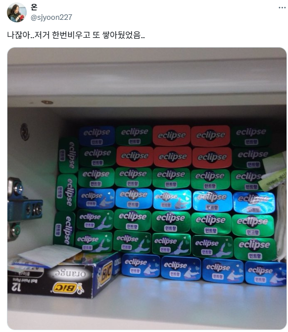
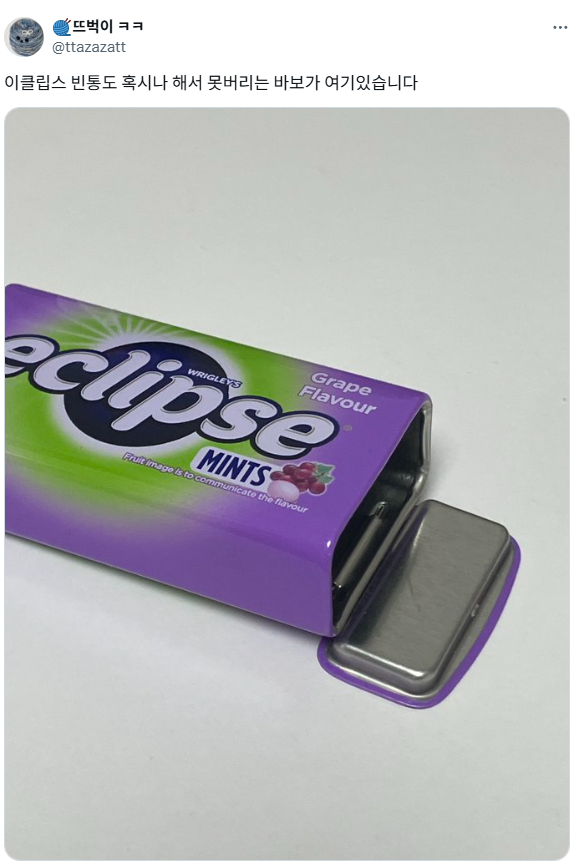
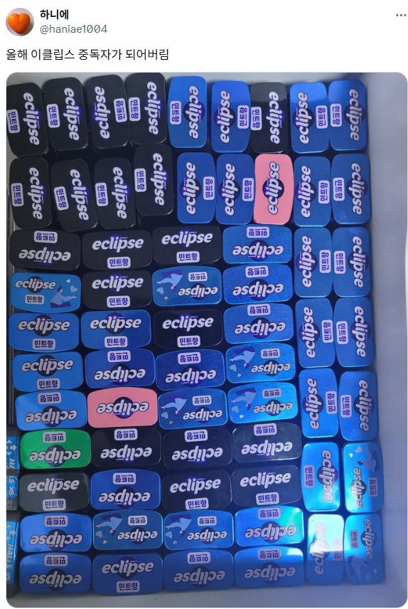
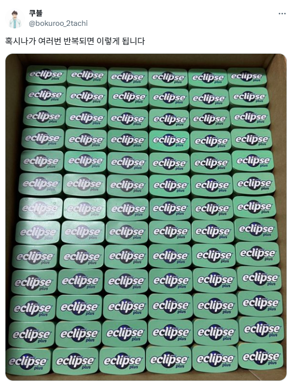
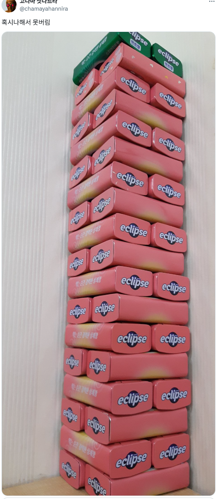
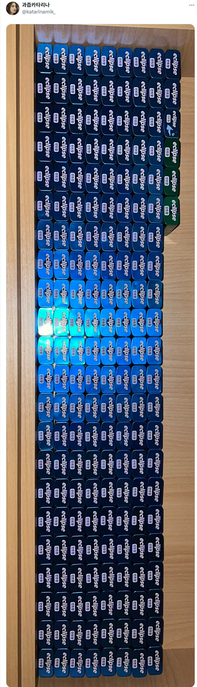

크기가 적당하고 재질이 단단하고
뚜껑의 여닫힘이 야물딱져서
어딘가 쓸모가 있을꺼 같은데 막상 쓸데는 없음






크기가 적당하고 재질이 단단하고
뚜껑의 여닫힘이 야물딱져서
어딘가 쓸모가 있을꺼 같은데 막상 쓸데는 없음
눈에 넣어도 안아픈 우리집 뽀삐
한번삶아서 못버림
추석 선물 세트 박스들이 그랬는데 ㅋㅋ 버리기 아까워서 보관은 하지만 쓸데가 거의 없는
새 옷 사면 주는 여분 단추 담아둠
휴대용 담배꽁초 담기에 좋아
외출할때 항상 주머니에 넣고다님
그래도 냄새 밖으로 샘..
내 손 아가리에서 이미남
길에 안버리는게 어디냐
ㄹㅇ 개추
내가 들고다니다 다른걸로 바꿨거든..
댓글 의도는 좋았는데 너무 짧게써서 오해의 소지가 있었군요?
스틱꽁초 넣기 개조음
냄새 존나 새나와서 못쓸수준인데
나는 그냥 파우치형씀
또각 또각만 몇번하고 버림
이어플러그 여기다 넣어야겠다
비파맛 없길래 맛알못들인가 했는데 한명 있네ㅋㅋ
다 못먹고 버릴까봐 맨날 복숭아맛만 사는데 비파맛 맛있냐 뭔맛임
진짜 비파맛이랑 안비슷한대 오묘하게 맛있음
USB 메모리 보관함
귀마개 보관함
유선이어폰 보관함
또 뭐가있을까
저거 중국산인거 보고 이제 안먹음 ㅜ
저기에 인공 눈물, 알코올 스왑, 밴드 그리고 비상약 몇개 넣어서 들고 다님.
근데 하나면 충분해서 빈통 보관하는게 더 많음
치실보관함
휴대용 재떨이로라도 써라
좀 버려라